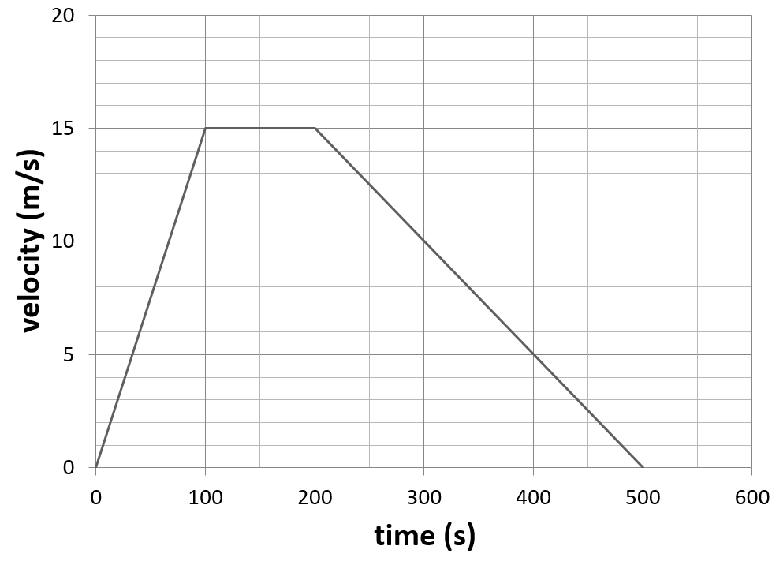

A velocity time graph plots velocity(v) on the y axis against time(t) on the x axis. Various values can be read and calculated from a distance time graph including velocity, time, distance and acceleration. The graph may be a straight line, a curved line or a mix of both.
How to read and calculate off a velocity time graph
Time - The time of a point on the graph is read from its value on the x axis. Remember to use the units from the graph.
Velocity - The velocity of a point on the graph is read from its value on the x axis. Remember to use the units from the graph.
Acceleration - The acceleration of a point on a graph is found by calulating the gradient of the line (change in velocity / change in time).
If the line is curved you will have to draw a tangent.
Distance - The distance travelled between two points on the graph can be found by calculating the area under the line between those points.
The area is calculated using the values on the axes.

Examples using graph
A time where the velocity = 5m/s is 400s
Velocity at 300s = 10m/s
Acceleration at 300s = Gradient of the line at 300s
- 15(change in velocity) / 300 (change in time) = -0.05 m/s2
Distance travelled between 100s and 200s = area under the line
100 (time) x 15 (velocity) = 1500m (distance travelled)